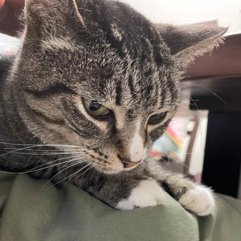

|
侯润升 Tel: xxxx Email: hourunsheng@outlook.com [Google Scholar] [English Version] |
 |
山东大学（推荐免试） 2023年09月 - 2026年06月
计算机科学与技术 硕士 计算机科学与技术学院青岛
青岛大学（GPA:3.9/4.0, top1.3%） 2019年09月 - 2023年06月
计算机科学与技术 本科 计算机科学技术学院 青岛
荣誉奖项：山东省政府奖学金、校级学习优秀一等奖学金2次、二等奖学金5次、青岛大学优秀学生、学习标兵、优秀毕业生、洲固奖学金“学业之星”、2021-2022年度全国大学生算法设计与编程挑战赛金奖、2021年 MathorCup高校大数据竞赛全国二等奖。基于多位核磁影像的腰椎间盘突出症AI辅助诊断系统设计 2021年10月 - 2022年10月
科研助理
互联网+红旅赛道“阅见未来-读书照亮未来”
参与开展、组织面向全校的读书会，每周举办一次读书分享活动，至今已超过40期。读书会曾走出校园，带领企业员工一起读书；读书会筹备参加三下乡，希望走进农村，让更多群体能够从读书中受益。